Candidate List 20261004Last night — ZTF: 2,408 passed basic cuts (27 young) · LSST: 0 passed basic cuts (0 young)Previous Day Next Day
Section 1: New Sources (age<1d) Section 2: Old (1-5d) sources observed last nightplaceholder
Section 2: Older Sources Observed Last Night (8)
0. [ZTF] ZTF26abyityt (FBOT?) [Back to Top] [Share] [Trigger Swift] [Fritz Alert] [Fritz Source] [Lasair]RA, Dec: 308.69055, 25.32867 20h34m45.73s, 25d19m43.21sGalactic (l, b): 67.4886, -8.94186 ext(g-r) = 0.198


TESS: Sectors [ 14 15 41 55 81 82 120]
PS1: 1 source in 3 arcsec Closest: d = 0.97 arcsec photoz=0.11+/-0.02 peak abs mag = -20.01
LegacySurvey: 0 sources in 3 arcsec

Extinction-corrected gr color:
From alerts: -0.41 +/- 0.16 mag
Rise Rate:
g: 0.24 mag/day
r: 0.32 mag/day
Fade Rate:
1. [ZTF] ZTF26abymrub (FBOT?) [Back to Top] [Share] [Trigger Swift] [Fritz Alert] [Fritz Source] [Lasair]RA, Dec: 351.94755, 41.95061 23h27m47.41s, 41d57m2.21sGalactic (l, b): 106.69862, -18.26927 ext(g-r) = 0.112


TESS: Sectors [16 57 84]
PS1: 1 source in 3 arcsec Closest: d = 4.60 arcsec photoz=0.49+/-0.65 peak abs mag = -27.83
LegacySurvey: 0 sources in 3 arcsec

Extinction-corrected gr color:
From alerts: -0.34 +/- 0.04 mag
Rise Rate:
g: 5.04 mag/day
r: 2.28 mag/day
Fade Rate:
g: 0.29 mag/day
r: 0.05 mag/day
2. [ZTF] ZTF26abypolw (FBOT?) [Back to Top] [Share] [Trigger Swift] [Fritz Alert] [Fritz Source] [Lasair]RA, Dec: 322.17239, 3.96337 21h28m41.37s, 3d57m48.11sGalactic (l, b): 57.30664, -32.07245 ext(g-r) = 0.073


TESS: Sectors 82
SDSS (<15 kpc):Found SDSS phot-z: z=0.13; peak abs mag = -19.81
PS1: 0 sources in 3 arcsec
LegacySurvey: 1 sources in 3 arcsec Closest: d = 0.15 arcsec, 178.4 deg (east of north) photoz=0.07 (68% bounds 0.06, 0.08), type=SER peak abs mag (ext. corrected) = -18.37 (68% bounds -17.94, -18.71)

Extinction-corrected gr color:
From alerts: -0.06 +/- 0.19 mag
Extinction-corrected gi color:
From alerts: -0.46 +/- 0.26 mag
Extinction-corrected ri color:
From alerts: -0.4 +/- 0.24 mag
Consistent with synchrotron, g-r>0!
Rise Rate:
g: 0.27 mag/day
r: 0.3 mag/day
i: 0.26 mag/day
Fade Rate:
3. [ZTF] ZTF26abysngk (FBOT?) [Back to Top] [Share] [Trigger Swift] [Fritz Alert] [Fritz Source] [Lasair]RA, Dec: 20.80665, -3.1305 1h23m13.60s, -3d-7m-49.81sGalactic (l, b): 141.87093, -64.82688 ext(g-r) = 0.04


TESS: Sectors [ 3 30 42 43 70 97]
SDSS (<15 kpc):Found SDSS phot-z: z=0.13; peak abs mag = -19.66
PS1: 0 sources in 3 arcsec
LegacySurvey: 1 sources in 3 arcsec Closest: d = 0.34 arcsec, 56.1 deg (east of north) photoz=0.08 (68% bounds 0.06, 0.11), type=SER peak abs mag (ext. corrected) = -18.59 (68% bounds -18.01, -19.14)

Extinction-corrected gr color:
From alerts: -0.04 +/- 0.21 mag
Extinction-corrected gi color:
From alerts: -0.19 +/- 0.23 mag
Extinction-corrected ri color:
From alerts: -0.15 +/- 0.25 mag
Consistent with synchrotron, g-r>0!
Rise Rate:
g: 0.09 mag/day
r: 0.26 mag/day
i: 0.04 mag/day
Fade Rate:
4. [ZTF] ZTF26abyukgq (Afterglow?) [Back to Top] [Share] [Trigger Swift] [Fritz Alert] [Fritz Source] [Lasair]RA, Dec: 36.86998, 17.65749 2h27m28.79s, 17d39m26.96sGalactic (l, b): 153.10698, -39.52125 WARNING: 2.92 deg from ecliptic plane ext(g-r) = 0.338


TESS: Sectors [42 70 71]
PS1: 0 sources in 3 arcsec
LegacySurvey: 1 sources in 3 arcsec Closest: d = 0.52 arcsec, 156.6 deg (east of north) photoz=0.03 (68% bounds 0.03, 0.05), type=REX peak abs mag (ext. corrected) = -16.99 (68% bounds -16.42, -18.04)

Extinction-corrected gr color:
From alerts: -0.87 +/- 99 mag
Extinction-corrected gi color:
From alerts: -0.21 +/- 99 mag
Extinction-corrected ri color:
From alerts: 0.14 +/- 0.2 mag
Consistent with synchrotron, g-r>0!
Rise Rate:
g: 0.1 mag/day
r: 0.45 mag/day
i: 0.07 mag/day
Fade Rate:
r: 0.63 mag/day
5. [ZTF] ZTF26abycteu (FBOT?) [Back to Top] [Share] [Trigger Swift] [Fritz Alert] [Fritz Source] [Lasair]RA, Dec: 272.56201, 53.17383 18h10m14.88s, 53d10m25.81sGalactic (l, b): 81.30222, 27.40998 ext(g-r) = 0.031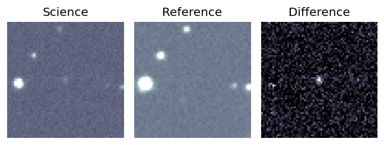
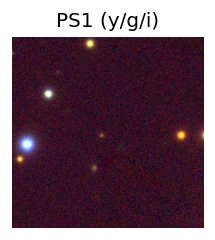
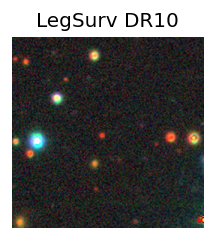
TESS: Sectors [ 14 15 18 21 24 25 26 40 41 48 51 52 53 54 55 58 59 60
73 74 75 78 79 81 82 85 86 117 118 119 120]
PS1: 0 sources in 3 arcsec
LegacySurvey: 1 sources in 3 arcsec Closest: d = 2.44 arcsec, 120.3 deg (east of north) photoz=0.18 (68% bounds 0.07, 0.63), type=PSF peak abs mag (ext. corrected) = -20.92 (68% bounds -18.61, -24.06)
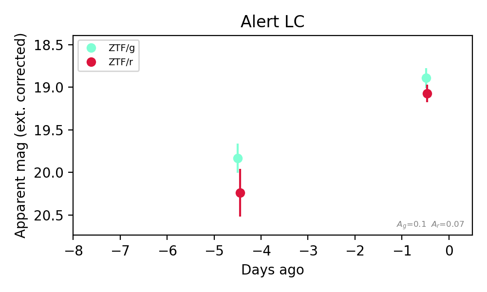
Extinction-corrected gr color:
From alerts: -0.18 +/- 0.16 mag
Rise Rate:
g: 0.23 mag/day
r: 0.29 mag/day
Fade Rate:
6. [ZTF] ZTF26abyynrs (Afterglow?) [Back to Top] [Share] [Trigger Swift] [Fritz Alert] [Fritz Source] [Lasair]RA, Dec: 37.58804, 6.29155 2h30m21.13s, 6d17m29.60sGalactic (l, b): 162.16576, -48.8977 ext(g-r) = 0.064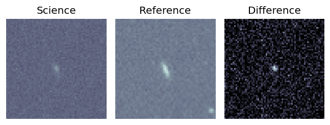
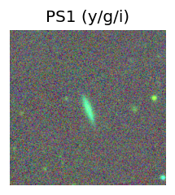
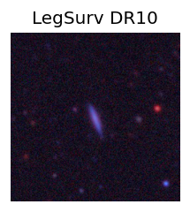
TESS: Sectors [ 4 31 42 43 70 71]
SDSS (<15 kpc):Found SDSS phot-z: z=0.09; peak abs mag = -18.55
PS1: 0 sources in 3 arcsec
LegacySurvey: 1 sources in 3 arcsec Closest: d = 1.03 arcsec, 181.1 deg (east of north) photoz=0.05 (68% bounds 0.04, 0.07), type=SER peak abs mag (ext. corrected) = -17.31 (68% bounds -16.71, -18.16)
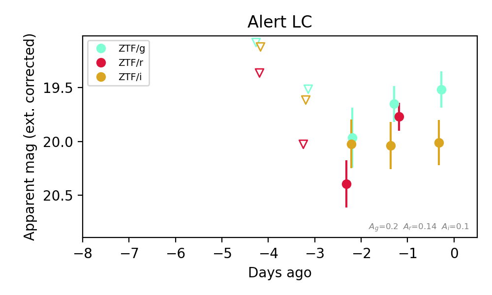
Extinction-corrected gr color:
From alerts: -0.12 +/- 0.21 mag
Extinction-corrected gi color:
From alerts: -0.5 +/- 0.27 mag
Extinction-corrected ri color:
From alerts: -0.27 +/- 0.26 mag
Consistent with synchrotron, g-r>0!
Rise Rate:
g: 0.07 mag/day
r: 0.55 mag/day
Fade Rate:
7. [ZTF] ZTF26abyyoop (Afterglow?) [Back to Top] [Share] [Trigger Swift] [Fritz Alert] [Fritz Source] [Lasair]RA, Dec: 36.27117, 22.21987 2h25m5.08s, 22d13m11.52sGalactic (l, b): 149.86705, -35.70647 ext(g-r) = 0.152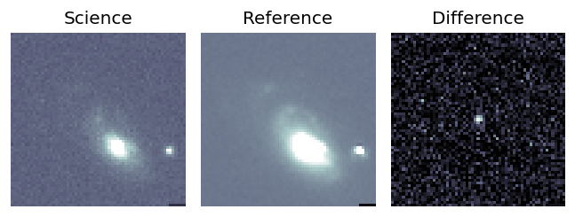
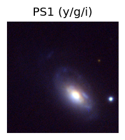
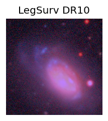
TESS: Sectors [18 42 43 58 70 71 85]
PS1: 0 sources in 3 arcsec
LegacySurvey: 1 sources in 3 arcsec Closest: d = 3.49 arcsec, 348.4 deg (east of north) photoz=0.01 (68% bounds 0.01, 0.03), type=REX peak abs mag (ext. corrected) = -14.92 (68% bounds -13.82, -16.45)
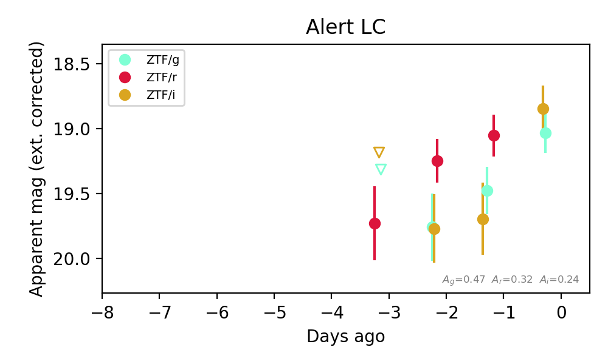
Extinction-corrected gr color:
From alerts: 0.42 +/- 0.24 mag
Extinction-corrected gi color:
From alerts: 0.19 +/- 0.24 mag
Extinction-corrected ri color:
From alerts: -0.64 +/- 0.32 mag
Consistent with synchrotron, g-r>0!
Rise Rate:
g: 0.38 mag/day
r: 0.09 mag/day
i: 0.53 mag/day
Fade Rate: